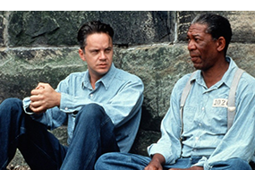
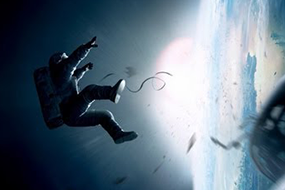
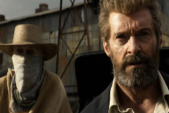
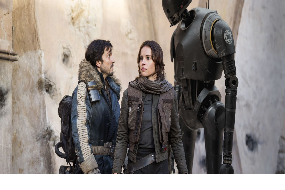
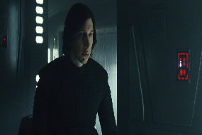
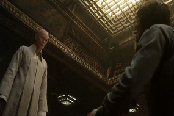

Побег из Шоушенка
Успешный банкир Энди Дюфрейн обвинен в убийстве собственной жены и ее любовника. Оказавшись в тюрьме под названием Шоушенк, он сталкивается с жестокостью и беззаконием, царящими по обе стороны решетки. Каждый, кто попадает в эти стены, становится их рабом до конца жизни. Но Энди, вооруженный живым умом и доброй душой, отказывается мириться с приговором судьбы и начинает разрабатывать невероятно дерзкий план своего освобождения.
Наркоз
Клай Бересфорд вынужден лечь под нож. Однако в процессе операции на сердце он неожиданно приходит в себя. Находясь в парализованном состоянии, будучи не в силах пошевелить ни рукой, ни ногой, он, тем не менее, чувствует каждое касание скальпеля к своей плоти…
Астрал
Джош и Рене переезжают со своими детьми в новый дом, но не успевают толком распаковать вещи, как начинаются странные события. Необъяснимо перемещаются предметы, в детской звучат странные звуки… Но в настоящий ужас приходят родители, когда их десятилетний сын Далтон впадает в кому. Все усилия врачей в больнице помочь мальчику безуспешны.

Гравитация
Доктор Райан Стоун, блестящий специалист в области медицинского инжиниринга, отправляется в свою первую космическую миссию под командованием ветерана астронавтики Мэтта Ковальски, для которого этот полет — последний перед отставкой. Но во время, казалось бы, рутинной работы за бортом случается катастрофа.Шаттл уничтожен, а Стоун и Ковальски остаются совершенно одни; они находятся в связке друг с другом, и все, что они могут, — это двигаться по орбите в абсолютно черном пространстве без всякой связи с Землей и какой-либо надежды на спасение.

Логан
События фильма разворачиваются в 2029 году. Мутанты находятся на грани вымирания. Измотанный Логан ухаживает за больным Профессором Икс в убежище на мексиканской границе. Логан стареет и понимает, что его способности к регенерации слабеют с каждым днем. Он пытается спрятаться от мира, но все его планы рушатся с появлением юной девочки-мутанта по имени Лаура, которую преследуют темные силы. Рискуя всем, Логан решает ввязаться в еще одну битву.

Изгой-один
Фильм рассказывает о Джин Эрсо – солдате Альянса повстанцев и бывшей преступнице. Лидер Альянса, Мон Мотма, выбирает ее для выполнения непростой задачи: Джин предстоит найти информацию о том, как уничтожить новое грозное супероружие Империи, испытания которого должны состояться в скором времени. Вместе со специальным отрядом Джин отправляется на задание, однако они даже не подозревали, с чем им придется столкнуться.

Звездные войны: Последние джедаи
После смерти Хана Соло противостояние Первого Ордена и Сопротивления только обостряется. Люк Скайуокер помогает Рей раскрыть свои способности, однако мощь пробудившейся в ней Силы пугает даже его. Желание удовлетворить собственные нереализованные амбиции далеко заведет Кайло Рена. Однако внутри его терзают сомнения по поводу правильности собственных действий. А тем временем Лея Органа, возглавляющая Сопротивление, вместе со своими соратниками разрабатывает новый план, который должен привести к краху Первого Ордена.

Доктор Стрэндж
Главный герой фильма – успешный нейрохирург доктор Стивен Стрэндж. Попав в автомобильную аварию, он лишается всего, чем так дорожил в своей жизни – любимой работы. Потеряв смысл жизни, герой фильма отправляется в невероятное путешествие с целью все исправить. В итоге он открывает в себе удивительные способности и становится доктором Стрэнджем – величайшим магом во вселенной. Однако обладание невероятной силой влечет за собой и большую ответственность. Стрэндж вынужден вступить в схватку с темной силой из параллельного мира.